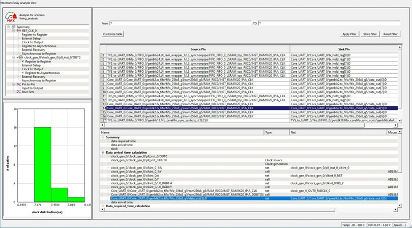
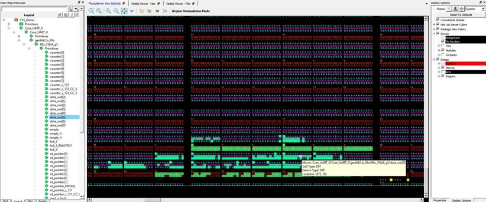
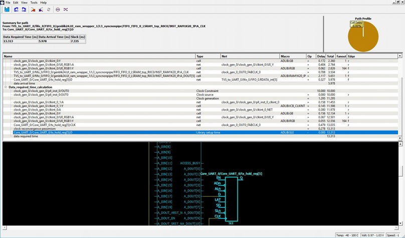
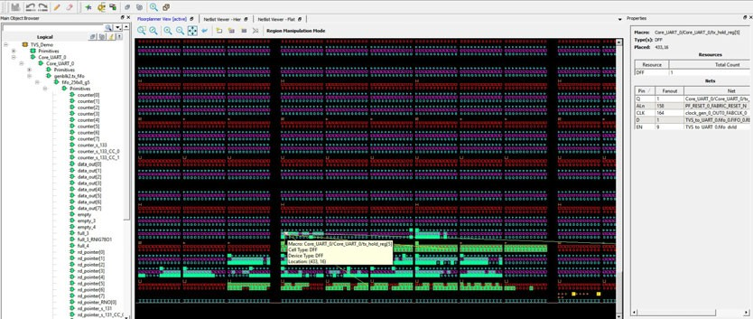
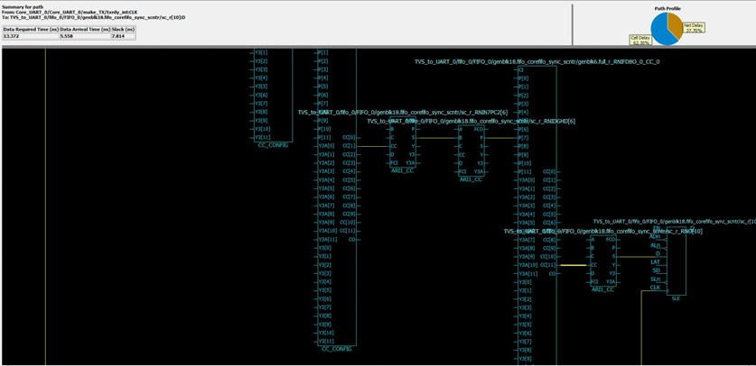
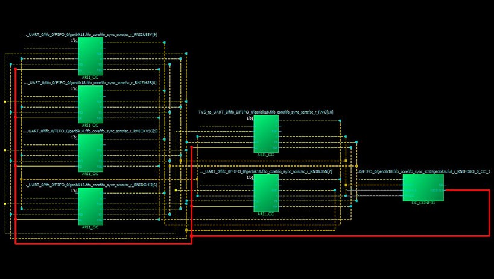

9.8 Cross-Probing from SmartTime to Chip View/Netlist View
(Ask a Question)Cross-probing allows you to select a design object in one application and see the selection reflected in another application. When you cross-probe a design object from SmartTime to the Chip View/Netlist View, you will better understand how the two applications interact with each other.
9.8.1 Cross-Probing from SmartTime to Chip View
(Ask a Question)With cross-probing, a timing path not meeting timing requirements may be fixed with relative ease when you see the less-than-optimal placement of the design object (in terms of timing requirement) in Chip Planner. Cross-probing from SmartTime to Chip Planner is available for the following design objects:
- Macros
- Ports
- Nets/Paths
- Complete Place and Route on the design.
- Open both SmartTime and Chip Planner.
9.8.1.1 Cross-Probing Examples
(Ask a Question)To cross-probe from SmartTime to Chip Planner, a design macro in the SmartTime is used as an example. You can download the example design files from the following location:
www.microchip.com/en-us/products/fpgas-and-plds/documentation
You can download the demo guide from the following location: www.microchip.com/en-us/application-notes/dg0852.html
9.8.1.1.1 Design Macro Example
(Ask a Question)- Make sure that the design has successfully completed the Place and Route step.
- Open SmartTime Maximum/Minimum Analysis view.
- Open Chip Planner.
-
In the SmartTime Maximum Analysis view, right click the instance
ending in data_out[5] in the Timing Path Graph and choose Show in
Chip Planner. With cross-probing, that macro is selected in Chip Planner's
Logical view (zoom in to see the selected item) and highlighted in white in the
Floorplanner View. Zoom in to see the selected item. The Properties window in Chip
Planner displays the properties of the macro ending in data_out[5].
Note: The menu item Show in Chip Planner is grayed out if Chip Planner is not already open. You may need to zoom in to view the highlighted Q[2] macro in the Floorplanner View.
Figure 9-50 9-51. Cross-Probing the Macro Ending in data_out[5] in SmartTime View Figure 9-50 9-51. Cross-Probing the Macro Ending in data_out[5] in Floorplanner View 
9.8.1.1.2 Timing Path Example
(Ask a Question)- Make sure the design completed the Place and Route step successfully.
- Open SmartTime Maximum/Minimum Analysis view.
- Open Chip Planner.
-
In the SmartTime Maximum/Minimum Analysis view, right click the macro
Core_UART_0/ Core_UART_0/tx_hold_reg[5] in the table and choose
Show Path in Chip Planner. There will be a net going from the macro
ending in tx_hold_reg[5] to the other macros such as PF_RESET_0, RAM1K20 and
RAM_R0C0 and local level global clock.
Note: If Chip Planner is not already open, the menu item in Show Path in Chip Planner is grayed out.
Figure 9-52. Cross-Probing - Timing Path (SmartTime View) Figure 9-53. Cross-Probing - Timing Path (Floorplanner View) 
9.8.1.1.3 Port Example
(Ask a Question)- Make sure the design completed the Place and Route step successfully.
- Open the SmartTime Maximum/Minimum Analysis view.
- Open Chip Planner.
- In the SmartTime Maximum/Minimum Analysis view, right click the port TX in the Path and choose Show in Chip Planner. Note that the port “TX” is selected and highlighted in Chip Planner's Port view.
From the Properties View inside Chip Planner, you will find the following information about the Port “CLK” you are cross-probing:
- Port Type
- Port Placement Location (X-Y Coordinates)
- I/O Bank Number
- I/O Standard
- Pin Assignment
9.8.2 Cross-Probing from SmartTime to Netlist Viewer
(Ask a Question)Cross-probing from SmartTime to Netlist Viewer allows you to examine and debug timing- critical paths as the first step towards timing closure. Timing paths with setup or hold time violations can be selected and cross-probed from SmartTime to Netlist Viewer to examine how the net is routed. Cross-probing may reveal and identify routing congestions.
- Complete the Place and Route step.
- Open Chip Planner.
- Load the Netlist Viewer - Flat.
- Open SmartTime in the Design Flow window.
- Open the Maximum/Minimum Delay Analysis View.
- Click on a timing path to open the Timing Path display in SmartTime.
-
Right click a net in the timing path display or a timing path in the SmartTime
table and select Show in Chip Planner.
Figure 9-56. Cross-Probe From SmartTime to Netlist Viewer Netlist Viewer opens a Logical Cone View to display the selected path and highlight it (see the following figure).Figure 9-57. Cross-Probed Net in Netlist Viewer Logical Cone View  -
If desirable, add Drivers or Loads to the net in the Netlist Active Cone view
for debugging.
Note: The cone view may not show the path’s input IO or some extra macros along the path added by the Flattened View(but not shown in the SmartTime Path). To get a complete path in the Logical Cone View, double click the dashed net or right click > add driver/load to cone.